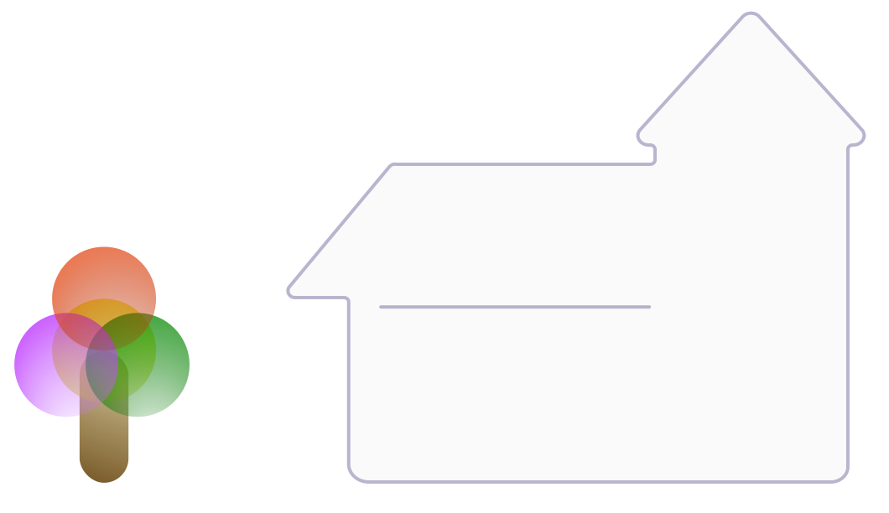

<body class="background">
    <div class="house-container">
        

        <div class="btn-group group1" role="group" aria-label="...">
            <button type="button" class="btn btn-general"   (click)="turn_allLigths(true)">Prender luces</button>
            <button type="button" class="btn btn-general"  (click)="turn_allLigths(false)">Apagar luces</button>
        </div>


        
        

        
        

        
        

        
        

        
        

        

        <button
            [ngClass]="dashboard.door_TopLeft == true  ? 'btn door door-top-left door-opened' : 'btn door door-top-left door-closed'"
            ></button>
        <button
            [ngClass]="dashboard.door_BottomLeft == true  ? 'btn door door-bottom-left door-opened' : 'btn door door-bottom-left door-closed'"
            ></button>
        <button
            [ngClass]="dashboard.door_TopMiddle == true  ? 'btn door door-top-middle door-opened' : 'btn door door-top-middle door-closed'"
            ></button>
        <button
            [ngClass]="dashboard.door_BottomMiddle == true  ? 'btn door door-bottom-middle door-opened' : 'btn door door-bottom-middle door-closed'"
            ></button>
        <button
            [ngClass]="dashboard.door_Right == true  ? 'btn door door-right door-opened' : 'btn door door-right door-closed'"
            ></button>


    </div>

</body>
